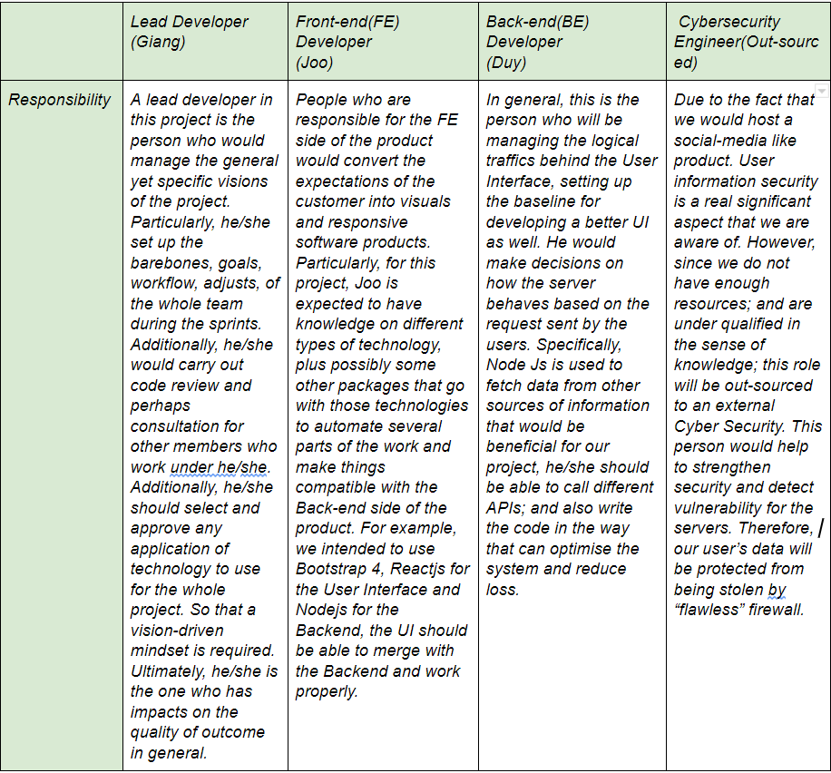

✓
"Written by 404_NOT_FOUND "1 . What is our aim?
After discussing within our team, we have decided to make a website about the latest information about technology in the world. Although there are a lot of similar websites like ours, in our country, we didn’t see the impact they made to society and the view of fascinating new technologies. Consequently, this project aims to make a new website about technology which aims to the Vietnamese viewer and make a huge impact for the tech-lover community.
Project objective1. Review the literature concerning people who are interested in tech and why they find it interesting in this field. First we need to find out what is the demand for this field. Because this is a new field and needs time to develop and get more popular in order to make a successful website. The majority of viewers who are interested in tech are tech lover, gamer and organization. From that information we can add some more interesting information about gaming technology and anything which relates to that information.
2. Always catch up to date with the latest news for the website by scaling up the APIs over time. Because we need a secure and value source of information to post to our website which will make it more attractive to the viewer. So when they first visit our website, they get amazed about the quality of the new and up to date new compared with the other famous tech websites on the internet.
3. Bring the freshest vibe that other websites don't have. After researching, we find out that some of the tech webs actually need major upgrades for the design because it didn’t bring out the vibe of an innovation of technology. For this part, we will try to understand the demand of the viewer and combine it with our design to create our own unique design for our website.
4. Identify if the website needs improvements or alterations to match the viewer demand. In our opinion, our valued viewer is one of the elements that helps us to get more popular for the tech community. We will try our best to listen and understand their opinion to make the website better in the future.
5. Complement for the shortcoming of each individual in the team. Because we are a group of newbies in this field, we still lack experience in many aspects. We will try our best to improve our skills over time and the best way to do it is to learn from the pioneer and listen to the feedback from our customer.
Plans and Progress
Main Functionalities:
To start with, before coming up with the current idea, we had gone through an intense duration of discussions and considerations. During this period, we fooled around with many ideas initiated by all members of the team. However, technology is a large field, it moves really fast day by day and our knowledge is still somewhat limited, we could not agree on any initiatives due to the lack of in-depth understanding. But finally, we selected to make a web application that mainly focuses on Technology press; it, however, has a “Social Integration” that stands out, serves as a platform with a significant amount of User-centered Design researches. In other words, we want to build something that satisfies the demands of communications among Technology enthusiasts based on the baseline of main-stream press.
We defined the potentials and purposes of the sites based on the niche of Vietnam’s information technology developmental projection and the general demands of communications in this digital era. Thus, the product is expected to focus on making knowledge about technology more approachable.
The main functionalities of our project can be summarized/broken down into 2 sides:
Reference :
Google.com. 2020. Redirect Notice. [online] Available at:
How it began, how it has progressed, and what stage of the plan
Before we set up, our team’s schedule is quite different compared to other teams. Because one of our teammates has an internship in the afternoon so it's tough to make our meeting to discuss this project. Therefore, we utilized our spare time such as after school and before school. Overall, we meet 1 or 2 times in a week to discuss how our project is getting well and what is our shortcoming that we need to fix. And our basic communication method was a messenger application that is Facebook Messenger. Since our team mates are free in the evening, we activated our e-discussion in the evening. And overall, every guy follows the leader's direction. Moreover, to pick this topic of our project, we did quite a deep discussion about what would be our project idea by face to face. And in this process, there are several creative ideas.
For example, the first idea was to create an application for coffee lovers. That is to upload specific coffee reviews by user. And this app uploads news about new products of coffee. So overall, we could make this app real. However, because the target of this application is global people, it’s too hard to make this app realize by using our skill.
The next idea was a daily necessity notification app. To illustrate this app, if users input what they currently have daily necessity, the app would calculate the run out of daily necessity and then push notification on phone by giving recommendation specific market. However, it’s quite hard to know the quantity of specific stores, it was dismissed.
Finally, the IT news-communicative application that we assigned as our project idea has potential to be realized. To explain this background of choice, Vietnam currently has an IT news platform as a site. However, what we thought that the site to be complemented is there’s no communication area such as a comment window, and even thumbs up and down . In fact, as IT people, we supposed that a communicative platform about specific news is necessary. Because by discussing with others, we can approach bright ideas and find several ethical problems about development of IT technologies. Also we believed that this site could be educative to Vietnamese people ; that is the bright side.
Basically, our site would constitute a user profile, thumbnail pages, discussion tap and contents window. In this process, because we realized that it’s too big to be materialized, we just determine that we develop our site as an example scale. So, we decided that our idea would be created by using HTML, CSS and Bootstrap. So the stage of this project has progressed as coding and designing the site. We created this site’s main page(showing thumbnail images of topics), search bar, several news and information about the IT, and a comment tab. Even though not all is done yet, nevertheless the most important of the progress of this project is that we try to embody our idea as site format as possible as we could; we create the basic bone of this site at least.
What we are planning in the foreseeable future
Now that we have the compromise on developing the idea, the next step is to carefully (yet roughly) plan on what should be done in the near future. Therefore we can evaluate how close we are to the expected goal. Approximately, there are 3 things that we are capable of doing for next stages.
1. First of all, the most important aspect of a social media site is the user's data being protected, thereby, obviously, this will be taken as the highest priority. Apparently, information security is not our level of expertise, we came up with the solution of using Firebase as our Authentication host. It is definitely not the most optimal solution, but it does fill up the wanted vacancy. In the future, provided we extend the database, we will consider replacing it with a paid service, Amazon Web Service for instance.
2. The next possible step is upgrading the UIs based on the feedback that we might receive from our user or testers. Since we initially aim for a clean and state-of-the-art appearance, we would not try to include too many elements on our User Interface, that will tremendously enhance user-friendliness. However, we leave the door open for improvement and optimization, sticking with one thing is not the style that we are looking for, but we would not change too much and try to keep the authenticity of the idea as much as possible.
3. Thirdly, once the site become more stable, in theory, we will move on to maintenance phase in which we will try to fix as many backlog bugs as possible. On top of that, we will keep listening to our reader/audience to deliver on-demand content. And when we’re qualified enough for the technical side of the product, the upgrade on server will be the next step
References: Google.com. 2020. Redirect Notice. [online] Available at:
